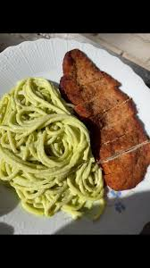

Espagueti Verde con Milanesa de Pollo
Makes 5 servings.

Description
Espagueti Verde is simply one of those dishes that provide comfort. You take a bite and you're instantly taken to your childhood home
and remember your mom grinding in the kitchen to make this dish. Add Milanesa de Pollo and it instantly elevates the dish and takes it to
a different level. Espagueti Verde has cilantro notes and a kick coming from the roasted poblano and jalapeno peppers, then you have the Milanesa de Pollo,
similar to a chicken cutlet. The milanesa is juicy yet crispy and on top of the espagueti verde, it' an out of this world combination.
This recipe can be modified by simply taking out the jalapeno peppers for a milder taste and also by adding spinach,
which will only enhance and brighten the color of the sauce.
Ingredients
For the Milanesa de Pollo:
- 1 lb chicken brest, thinly sliced
- 4 eggs
- panko bread crumbs
- bread crumbs
- seasoning salt
- garlic powder
- onion powder
- paprika
For the Espagueti Verde:
- 1 lb spaghetti
- 3 poblano peppers
- 3 jalapeno peppers, optional
- 1/4 white onion
- 3 garlic cloves
- 1/2 bunch of cilantro
- 4 cups spinach, optional
- 1 bar cream cheese
- 6 oz Mexican sour cream
- 1/2 cup mozzarella cheese
- 1/2 tbsp chicken bouillon
- garlic powder
- onion powder
Instructions
- Thinly slice the chicken breast into two even pieces, you may need to slice into three if the breast is thicker.
If you have thin sliced chicken, skip this step.
- Set up your dredging station, beat 4 eggs and add a teaspoon of each seasoning listed to the eggs. Place the eggs in a wide bowl and set aside.
Place a cup of bread crumbs and a cup of panko bread crumbs along with a teaspoon of each seasoning listed into a wide plate and mix.
- Dip the thinly sliced chicken into the egg mixture, then dip into the bread crumb mixture until fully coated on both sides.
Let the chicken rest on a wire rack or on a plate. Repeat until each chicken breast is fully coated.
- Add oil to a wide pan so that it comes up to an inch. Heat up the oil on medium-high heat, you may know the oil is hot and ready when you dip a
wooden stick into the oil and it bubbles.
- While the oil is heating up, on a pan add a tablespoon of oil and place the peppers in, letting them blister evenly. Leave them until the skin of the peppers is fully blistered. You may also air fry them on high for about 10-15 minutes or until fully blistered. Once thr peppers are done, place them in a large ziploc bag and seal them for about 5 minutes. The steam inside the bag will allow for easy removal of the blistered skin.
- Add enough water for the pasta to a deep pot and bring to a boil, make sure to salt the water. Once the water has come to a boil, add the spaghetti pasta. Cook until al dente.
- It is now time to fry the milanesa, Add two of the breasts to the oil and cook about 10 minutes until golden brown, flipping halfway. Place on a wire rack to cool and immediately sprinkle salt on top. Repeat until all the milanesas are done.
- Remove the peppers from the ziploc bag and remove the blistered skin, as well as the stem, veins, and seeds.
- In a blender add the peeled peppers, onion, garlic, cilantro, cream cheese, mexican sour cream, and spinach (optional). Blend until a smooth, creamy consistency, season to taste with the seasonings listed.
- Drain the pasta and set aside. In a large saucepan, bring thr poblano sauce to a light simmer, add the cheese and mix until well combined. Add the pasta to the sauce and combine.
- Plate the pasta alongside the milanesa and enjoy!